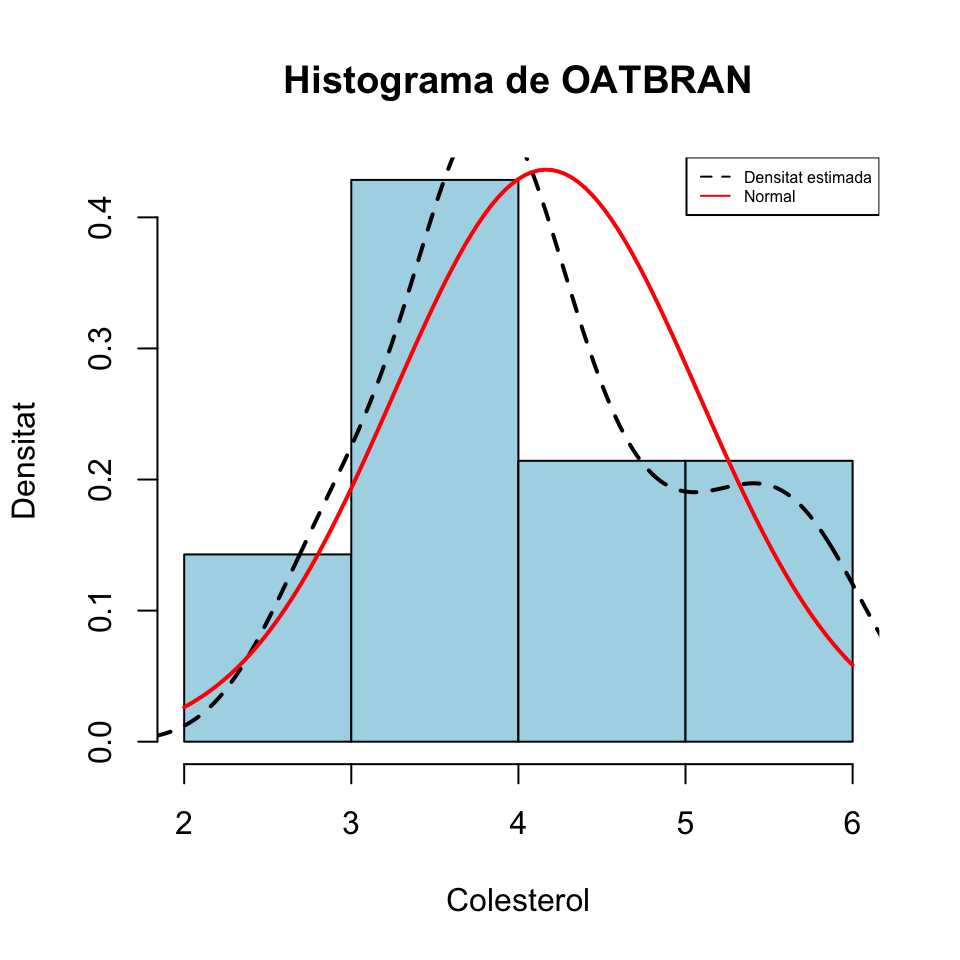
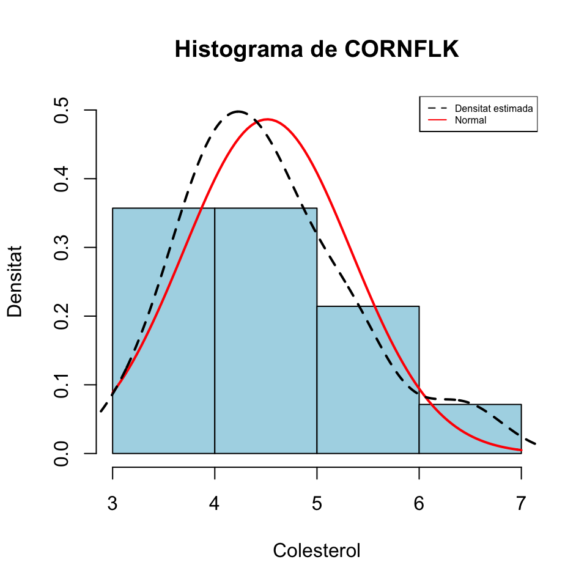
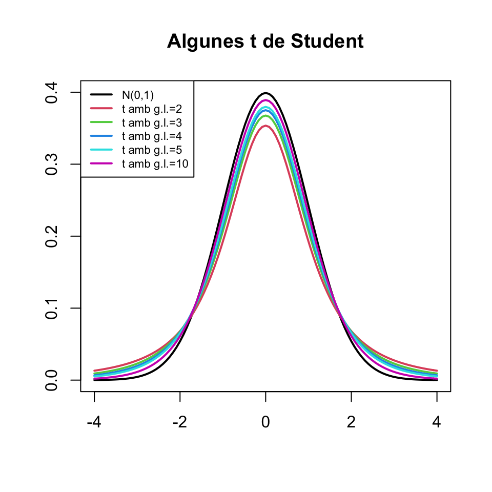
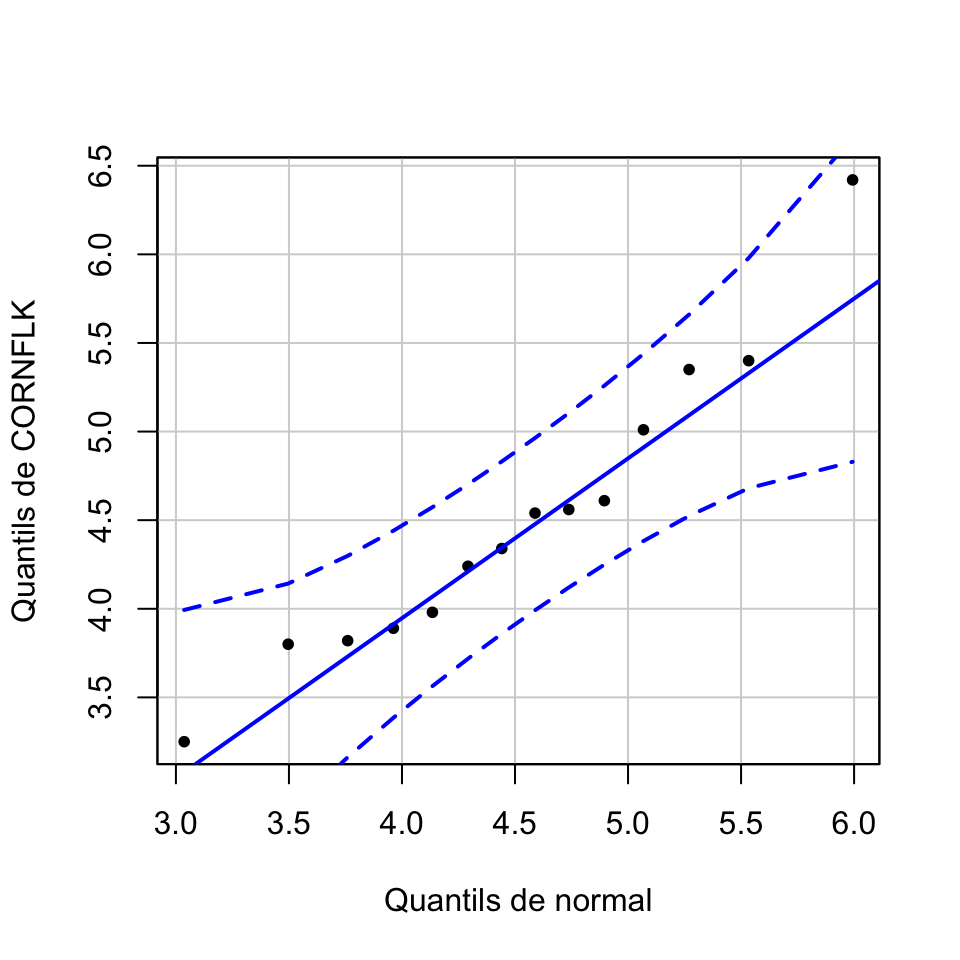
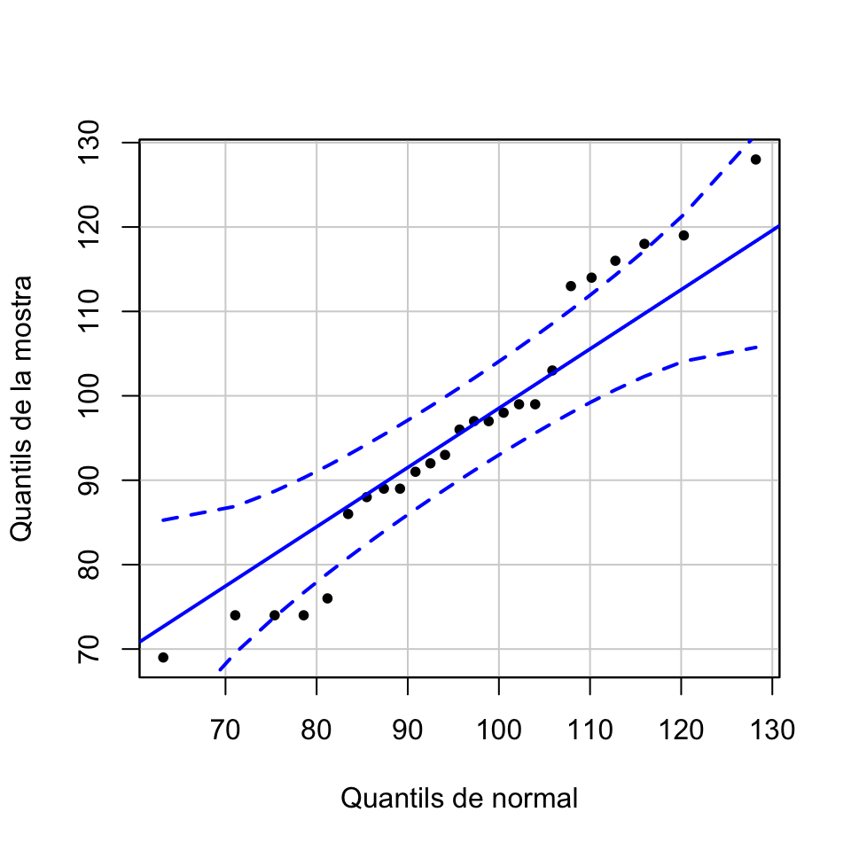
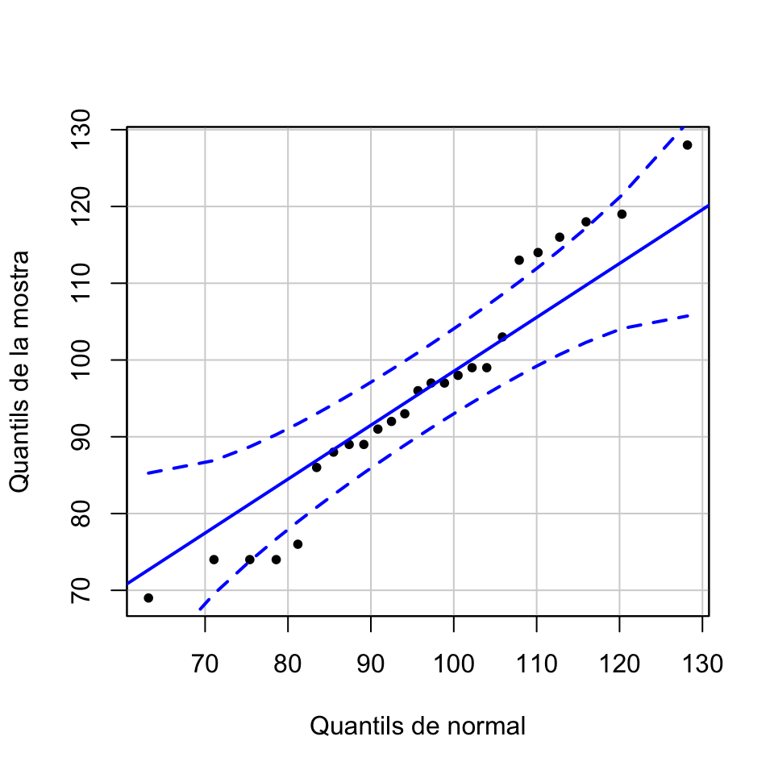
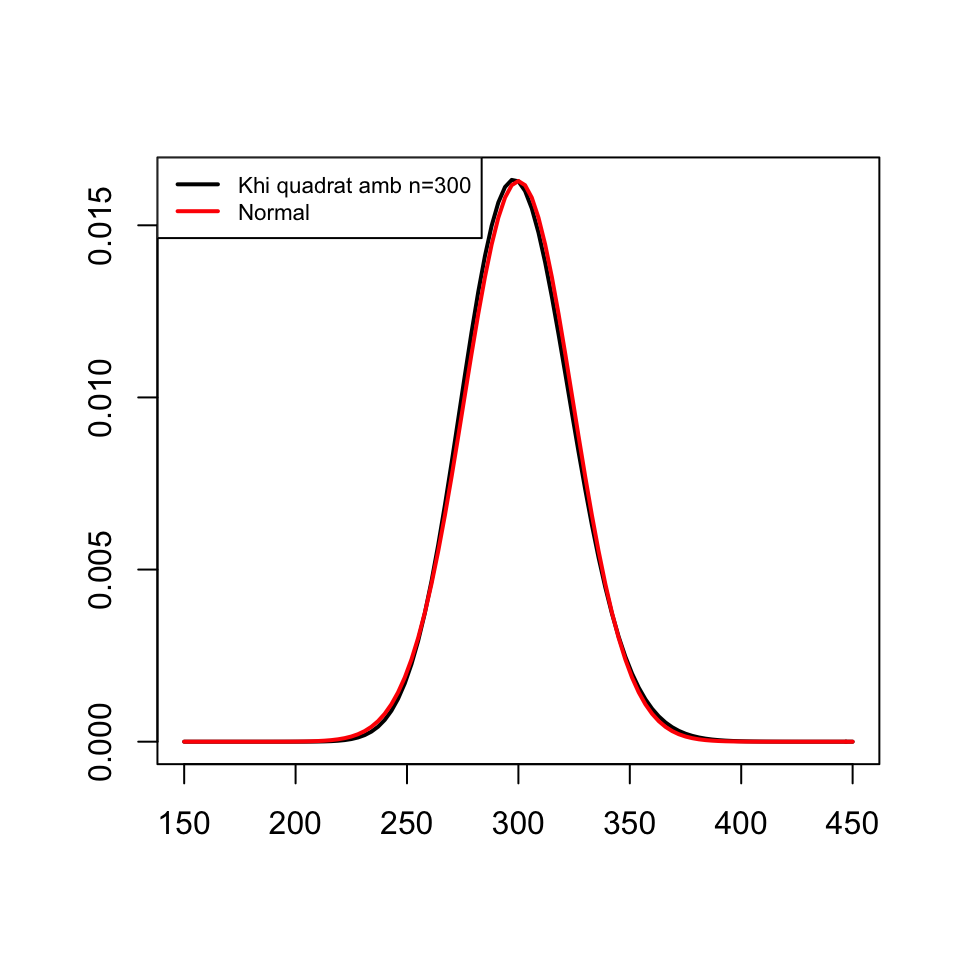
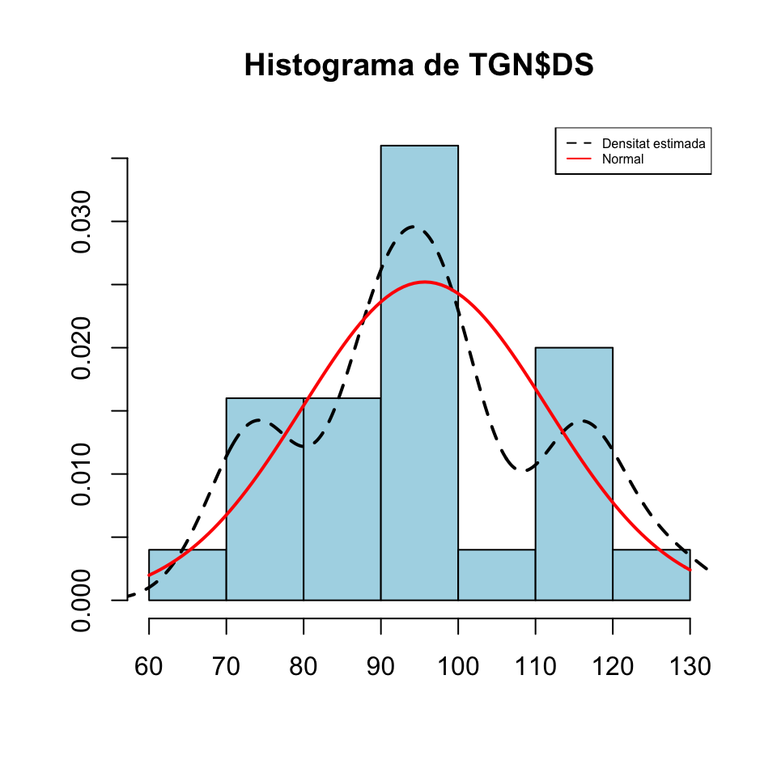
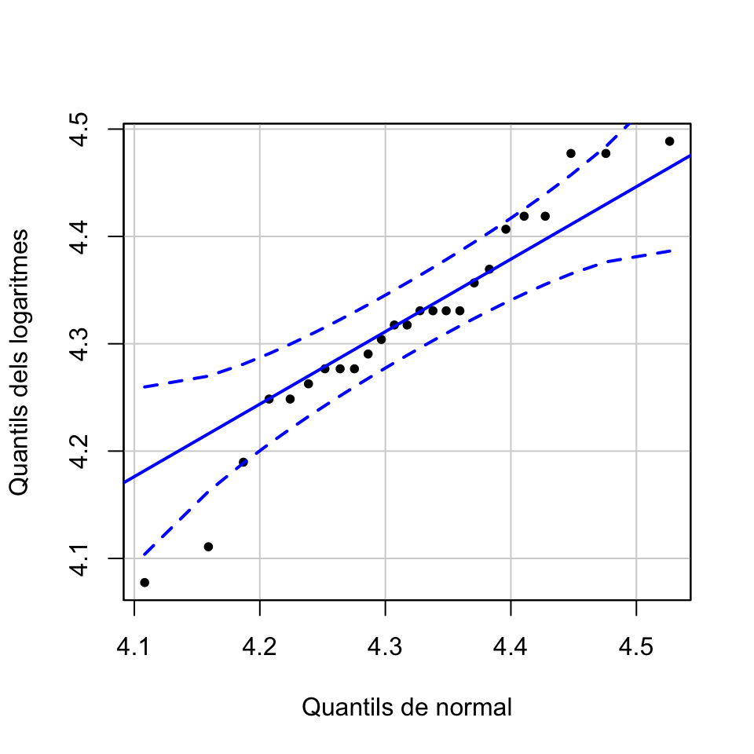

Tema 4 Contrastos d’hipòtesis d’un i dos paràmetres
4.1 Test t per a una mitjana
Si estam en una de les dues situacions següents:
\(X\) una variable aleatòria normal de mitjana \(\mu\) i prenem una mostra aleatòria simple de mida \(n\) qualsevol
\(X\) una variable aleatòria qualsevol de mitjana \(\mu\) i prenem una mostra aleatòria simple de mida \(n\) gran (diguem de com a mínim 30, o millor 40, subjectes)
i volem realitzar un contrast \[ \left\{\begin{array}{l} H_{0}:\mu=\mu_0\\ H_{1}:\mu \neq\mu_0\text{ o }\mu >\mu_0\text{ o }\mu<\mu_0 \end{array} \right. \] podem emprar el test t que ja hem explicat a la Secció 3.5, basat en l’estadístic de contrast \[ T= \frac{\overline{X}-\mu_{0}}{{\widetilde{S}_X}/{\sqrt{n}}} \] que, en les condicions donades i si \(\mu=\mu_0\), té una distribució (aproximadament, quan \(X\) no és normal però \(n\) és gran) \(t_{n-1}\).
Exemple 4.1 Una organització ecologista afirma que el pes mitjà dels individus adults d’una espècie ha disminuït dràsticament. Se sap per les dades històriques que el pes mitjà poblacional era de 460 g.
Una mostra aleatòria de 50 individus d’aquesta espècie ha donat una mitjana mostral de 428 g i una desviació típica mostral de 119 g. Amb aquestes dades, podem afirmar amb un nivell de significació del 5% que el pes mitjà és inferior a 460 g?
Variable aleatòria d’interès: \(X\): “Prenem un animaló d’aquests i mesuram el seu pes, en grams”, de mitjana \(\mu\)
Contrast: \[ \left\{\begin{array}{l} H_{0}:\mu=460\\ H_{1}:\mu<460 \end{array} \right. \]
Nivell de significació: \(\alpha=0.05\)
Estadístic: Com que \(n=50\) és gran, podem usar \[ T=\frac{\overline{X}-\mu_0}{{\widetilde{S}_X}/{\sqrt{n}}} \] que sí \(H_0\) és vertadera serà (aproximadament) t de Student amb \(n-1=49\) graus de llibertat
Valor de l’estadístic: \[ \dfrac{428-460}{{119}/{\sqrt{50}}}=-1.9 \]
p-valor: \[ P(T\leqslant-1.9)=\texttt{pt(-1.9,49)}=0.032 \]
Interval de confiança del 95%: \[ \left(-\infty, \overline{X}-t_{n-1,\alpha}\cdot \frac{\widetilde{S}_X}{\sqrt{n}}\right]=(-\infty, 456.2] \]
Decisió: Com que el p-valor és més petit que 0.05, concloem (amb \(\alpha=0.05\)) que el pes mitjà actual és més petit que 460 g. Amb un 95% de confiança podem afirmar que el pes mitjà actual és inferior a 456.2 g.
Ho resumiríem dient:
Hi ha evidència estadísticament significativa que el pes mitjà actual és menor que 460 g (p=0.03, IC 95% \(-\infty\) a 456.2) i que per tant ha minvat en els darrers anys
4.2 Test t per a dues mitjanes
Si estam en una de les situacions següents:
\(X_1,X_2\) dues variables aleatòries normals de mitjanes \(\mu_1\), \(\mu_2\) i en prenem mostres aleatòries simples de mides \(n_1\), \(n_2\) qualssevol
\(X_1,X_2\) dues variables aleatòries qualssevol de mitjanes \(\mu_1\), \(\mu_2\) i i en prenem mostres aleatòries simples de mides \(n_1\), \(n_2\) grans (diguem de com a mínim 30, o millor 40, subjectes cadascuna)
i volem realitzar un contrast \[ \left\{\begin{array}{l} H_{0}:\mu_1=\mu_2\\ H_{1}:\mu_1 \neq\mu_2\text{ o }\mu_1 >\mu_2\text{ o }\mu_1<\mu_2 \end{array} \right. \] podem usar un test t, basat en un estadístic de contrast \(T\) adequat que segueix una llei t de Student.
L’estadístic de contrast concret i els graus de llibertat de la seva distribució t de Student depenen:
De si les dues mostres són independents (hem mesurat \(X_1\) i \(X_2\) sobre dues mostres obtingudes de manera independent una de l’altra) o aparellades (hem mesurat \(X_1\) i \(X_2\) sobre els subjectes d’una mateixa mostra o hi ha un aparellament natural entre els subjectes de les dues mostres)
Quan les mostres són independents, també depenen de si \(X_1\) i \(X_2\) tenen la mateixa variància o no (que s’ha de decidir amb un altre contrast); per a mostres de la mateixa mida de variables normals, la conclusió sol ser la mateixa
Quan les mostres són aparellades, podem entendre que tenim una sola mostra, formada per les parelles. En aquest cas, traduïm \[ \left\{\begin{array}{l} H_{0}:\mu_1=\mu_2\\ H_{1}:\mu_1 \neq\mu_2\text{ o }\mu_1 >\mu_2\text{ o }\mu_1<\mu_2 \end{array} \right. \] en \[ \left\{\begin{array}{l} H_{0}:\mu_1=\mu_2\\ H_{1}:\mu_1-\mu_2 \neq0\text{ o }\mu_1-\mu_2 >0\text{ o }\mu_1-\mu_2<0 \end{array} \right. \] on \(\mu_1-\mu_2\) és la mitjana de \(X_1-X_2\), i el consideram un contrast d’una sola mitjana, emprant com a mostra les diferències \(X_1-X_2\) a les parelles.
Per tant, quan les mostres són aparellades, si diem \(\overline{D}\) a la mitjana mostral de \(X_1-X_2\) i \(\widetilde{S}_D\) a la desviació típica mostral de \(X_1-X_2\) sobre la mostra de parelles i diem \(n\) a la mida de la mostra de parelles, l’estadístic de contrast és \[ T=\frac{\overline{D}}{\widetilde{S}_D/\sqrt{n}} \] que quan \(\mu_1-\mu_2=0\) té (aproximadament, en el cas que \(X_1,X_2\) no siguin normals però la \(n\) sigui gran) distribució \(t_{n-1}\).
Quan les mostres són independents, siguin \(\overline{X}_1\) i \(\widetilde{S}^2_1\) la mitjana mostral i la variància mostral de la mostra de \(X_1\) i \(\overline{X}_2\) i \(\widetilde{S}^2_2\) la mitjana mostral i la variància mostral de la mostra de \(X_2\). Diguem, a més, \(\sigma_1^2\) i \(\sigma_2^2\) a les variàncies (poblacionals) de \(X_1\) i \(X_2\). Aleshores:
Si \(\sigma_1^2=\sigma_2^2\), l’estadístic de contrast és \[ T=\frac{\overline{X}_1-\overline{X}_2}{\sqrt{(\frac{1}{n_1}+\frac{1}{n_2})\cdot \frac{(n_1-1)\widetilde{S}_1^2+(n_2-1)\widetilde{S}_2^2}{n_1+n_2-2}}} \] que, quan \(\mu_1=\mu_2\), té distribució (aproximadament, en el cas que \(X_1,X_2\) no siguin normals però \(n_1\) i \(n_2\) siguin grans) \(t_{n_1+n_2-2}\)
Si \(\sigma_1^2\neq \sigma_2^2\), l’estadístic de contrast és \[ T=\frac{\overline{X}_1-\overline{X}_2}{\sqrt{\frac{\widetilde{S}_1^2}{n_1}+\frac{\widetilde{S}_2^2}{n_2}}} \] que, quan \(\mu_1=\mu_2\), té distribució (aproximadament, en el cas que \(X_1,X_2\) no siguin normals però \(n_1\) i \(n_2\) siguin grans) \(t_{\nu}\) amb \[ \nu=\frac{\displaystyle \left( \frac{\widetilde{S}_1^2}{n_1}+\frac{\widetilde{S}_2^2}{n_2}\right)^2} {\displaystyle \frac{1}{n_1-1}\left(\frac{\widetilde{S}_1^2}{n_1}\right)^2+\frac{1}{n_2-1}\left(\frac{\widetilde{S}_2^2}{n_2}\right)^2} \]
El nombre de graus de llibertat de la distribució t de Student usada en un contrast sobre dues mostres de mida \(n\):
Si les mostres són aparellades, és \(n-1\)
Si les mostres són independents, és aproximadament \(2(n-1)\)
Això fa que la probabilitat d’error de Tipus I del contrast amb mostres aparellades (a igualtat de la resta de valors) sigui més petita. Per exemple, suposem que volem realitzar el contrast \[ \left\{ \begin{array}{l} H_0: \mu_1=\mu_2\\ H_1: \mu_1>\mu_2 \end{array} \right. \] i que l’estadístic de contrast \(T\) sobre dues mostres de mides \(n_1=n_2=20\) dóna 1.7. Aleshores
Si les mostres són independents, \[ \text{p-valor}=P(T>1.7)\approx \texttt{1-pt(1.7,38)}=0.0487 \]
Si les mostres són aparellades, \[ \text{p-valor}=P(T>1.7)=\texttt{1-pt(1.7,19)}=0.0527 \]
Per tant, amb nivell de significació \(\alpha=0.05\), rebutjaríem la hipòtesi nul·la amb les mostres independents i l’acceptaríem amb les mostres aparellades.
Tots aquests tests t estan implementats en la funció de R
t.test(x, y, mu=..., alternative=..., conf.level=..., paired=..., var.equal=...)on:
Entram com a
xuna mostra i amuel valor amb el qual volem contrastar \(\mu\), o entram com axiyles mostres de \(X_1\) i de \(X_2\)A
alternativehi hem d’indicar el tipus de contrast segons la hipòtesi alternativa:alternative="two.sided"(\(\neq\), el valor per defecte)alternative="less"(\(<\))alternative="greater"(\(>\))
En el cas d’un contrast de dues mitjanes, a
pairedhi hem d’indicar si les mostres són independents, ambpaired=FALSE(el valor per defecte), o aparellades, ambpaired=TRUEEn el cas d’un contrast de dues mitjanes amb mostres independents, a
var.equalhi hem d’indicar si les variàncies són iguals, ambvar.equal=TRUE, o diferents, ambvar.equal=FALSE(el valor per defecte)A
conf.levelhi hem d’especificar el nivell de confiança \(1-\alpha\): el seu valor per defecte és 0.95, que correspon al nivell de significació \(\alpha=0.05\) usual
Exemple 4.2 La temperatura mitjana del cos humà, és el valor usualment acceptat de 98.6o F (37o C)?
Per contrastar-ho, emprarem la taula de dades Body_Temperature.txt, construïda per P.A. Mackowiak, S. S. Wasserman i M.M. Levine en 1992 precisament per realitzar aquest contrast i que trobareu a l’Aula Digital.
Variable aleatòria d’interès: \(X\): “Prenem una persona i li miram la temperatura, en graus F”, de mitjana \(\mu\)
Contrast: \[ \left\{\begin{array}{l} H_{0}:\mu=98.6\\ H_{1}:\mu \neq 98.6 \end{array} \right. \]
Realitzarem aquest contrast amb R. Carregam la taula de temperatures, que prèviament hem guardat en el directori de treball de R, en un dataframe que anomenarem BT.
BT=read.table("Body_Temperature.txt")
head(BT)## Gender HeartRate Temperature
## 1 M 69 97.0
## 2 M 72 98.8
## 3 M 68 96.2
## 4 F 75 97.8
## 5 F 68 98.8
## 6 M 79 101.3str(BT)## 'data.frame': 230 obs. of 3 variables:
## $ Gender : Factor w/ 2 levels "F","M": 2 2 2 1 1 2 1 1 1 2 ...
## $ HeartRate : int 69 72 68 75 68 79 71 73 77 81 ...
## $ Temperature: num 97 98.8 96.2 97.8 98.8 ...Veiem que la taula BT consta de 230 individus i 3 variables mesurades sobre cadascun d’ells: el sexe (variable Gender, amb valors F per a dona i M per a home), les pulsacions per minut (variable HeartRate) i la temperatura en graus F (variable Temperature).
Com que la mostra és gran, \(n=230\), podem emprar un test t. Emprarem la funció t.test, aplicant-la al vector de temperatures i al valor que contrastam, 98.6, entrat amb el parametre mu. El paràmetre alternative="two.sided" indica que el test serà bilateral.
t.test(BT$Temperature, mu=98.6, alternative="two.sided")##
## One Sample t-test
##
## data: BT$Temperature
## t = -5.7205, df = 229, p-value = 3.301e-08
## alternative hypothesis: true mean is not equal to 98.6
## 95 percent confidence interval:
## 98.17563 98.39307
## sample estimates:
## mean of x
## 98.28435Del resultat cal destacar:
El p-valor,
p-value, en el nostre cas \(3.301\times 10^{-8}\) (R l’ha escrit en notació científica: 3.301e-08).L’IC 95%,
95 percent confidence interval, per al valor que contrastam (aquí, la temperatura mitjana poblacional), en el nostre cas [98.17563, 98.39307].La mitjana mostral de la mostra,
sample of x, en el nostre cas 98.28435.
La conclusió és:
El p-valor és \(3\times 10^{-8}\), per la qual cosa obtenim evidència estadísticament significativa que la temperatura mitjana del cos humà no és de 98.6o F (37o C)
A més, com com que l’IC 95% per a la temperatura mitjana del cos humà que hem obtingut va de 98.2 a 98.4 (36.78 a 36.89o C), hem trobat evidència a aquest nivell de confiança que aquesta temperatura mitjana és (lleugerament) inferior 98.6o F
Ho resumiríem dient que hi ha evidència estadísticament significativa que la temperatura mitjana del cos humà no és de 98.6o F (p=3·10-8, IC 95% 98.2 a 98.4).
Exemple 4.3 La temperatura mitjana dels homes, és més alta que la de les dones?
Per resoldre aquesta qüestió, emprarem la mateixa taula de dades que abans.
Variables aleatòries d’interès:
- \(X_h\): temperatura d’un home en graus F, de mitjana \(\mu_h\)
- \(X_d\): temperatura d’una dona en graus F, de mitjana \(\mu_d\)
Contrast: \[ \left\{\begin{array}{l} H_{0}:\mu_h=\mu_d\\ H_{1}:\mu_h> \mu_d \end{array} \right. \]
Per poder emprar un t test, primer ens cal saber si hi ha nombres suficientment grans d’homes i dones a la nostra mostra per emprar-lo. Per això calcularem la taula de freqüències dels sexes, aplicant la funció table al vector BT$Gender dels sexes:
table(BT$Gender)##
## F M
## 116 114Són prou grans.
Anam a crear uns vectors amb les temperatures d’homes i de dones. Recordau que per extreure d’un dataframe el vector de valors d’una variable V1 per als individus que prenen un valor concret X en una altra variable V2 s’empra la construcció dataframe[V2==X,V1]. Així, les temperatures dels homes (individus on la variable Gender és igual a M) són
BT[BT$Gender=="M","Temperature"]## [1] 97.0 98.8 96.2 101.3 99.2 97.5 97.3 98.6 99.0 98.0 97.0
## [12] 97.6 99.0 97.1 98.9 98.6 98.9 97.2 98.0 99.4 98.8 98.5
## [23] 99.6 97.3 96.5 97.8 98.3 98.1 98.8 97.7 98.3 97.7 99.1
## [34] 98.8 97.4 96.9 98.0 98.4 100.3 97.0 99.0 100.6 98.0 98.5
## [45] 97.0 97.0 98.6 97.8 97.3 96.3 96.7 96.9 97.0 97.1 97.1
## [56] 97.1 97.2 97.3 97.4 97.4 97.4 97.4 97.5 97.5 97.6 97.6
## [67] 97.6 97.7 97.8 97.8 97.8 97.8 97.9 97.9 98.0 98.0 98.0
## [78] 98.0 98.0 98.0 98.1 98.1 98.2 98.2 98.2 98.2 98.3 98.3
## [89] 98.4 98.4 98.4 98.4 98.5 98.5 98.6 98.6 98.6 98.6 98.6
## [100] 98.6 98.7 98.7 98.8 98.8 98.8 98.9 99.0 99.0 99.0 99.1
## [111] 99.2 99.3 99.4 99.5Bé, cream els vectors \(X_h\) (homes) y \(X_d\) (dones)
X_h=BT[BT$Gender=="M","Temperature"] #temperatures d'homes
X_d=BT[BT$Gender=="F","Temperature"] #temperatures de donesPer portar a terme un test t per comparar dues mitjanes, aplicam la funció t.test als vectors X_hi X_d amb paràmetre alternative="greater" per indicar que el test és unilateral: la hipòtesi alternativa és que la mitjana de la primera població (homes) és més gran que la de la segona (dones). En aquest exemple, a més, especificarem que les mostres són independents amb paired=FALSE (no caldria, ja que és el valor per defecte) i a més hem d’especificar si les variàncies poblacionals són iguals (var.equal=TRUE) o diferents (var.equal=FALSE). El que farem serà provar quan les variàncies són iguals i quan són diferents: si les dues conclusions són la mateixa, aquesta serà la conclusió que prendrem.
t.test(X_h, X_d, alternative="greater",paired=FALSE, var.equal=TRUE)##
## Two Sample t-test
##
## data: X_h and X_d
## t = -2.5379, df = 228, p-value = 0.9941
## alternative hypothesis: true difference in means is greater than 0
## 95 percent confidence interval:
## -0.4569566 Inf
## sample estimates:
## mean of x mean of y
## 98.14474 98.42155t.test(X_h, X_d, alternative="greater",paired=FALSE, var.equal=FALSE)##
## Welch Two Sample t-test
##
## data: X_h and X_d
## t = -2.5358, df = 225.32, p-value = 0.9941
## alternative hypothesis: true difference in means is greater than 0
## 95 percent confidence interval:
## -0.4571095 Inf
## sample estimates:
## mean of x mean of y
## 98.14474 98.42155En tots dos casos obtenim un p-valor (p-value) gran i un IC 95 % (95 percent confidence interval) per a la diferència de les mitjanes que conté el 0, per la qual cosa no podem descartar que les dues mitjanes siguin iguals.
Ho resumiríem dient que no hi ha evidència estadísticament significativa que la temperatura mitjana de les dones sigui més baixa que la dels homes (p=0.99, IC 95% -0.46 a \(\infty\)).
Vegem, si \(\overline{X_h}=98.14\) i \(\overline{X_d}=98.42\), com volíeu que obtinguéssim evidència que \(\mu_h>\mu_d\)? Mirau sempre les dades primer!
Exercici: Emprant les mateixes dades, trobau evidència que \(\mu_h<\mu_d\)? I que \(\mu_h\neq \mu_d\)?

Figura 4.1: Spoiler
Exemple 4.4 Desdijunar segó de civada (oat bran) en lloc de flocs de blat de moro (corn flakes), ajuda a reduir el nivell de colesterol?
Per resoldre aquesta qüestió, emprarem la taula de dades oatbran.txt, que trobareu a l’Aula Digital. Aquestes dades es recolliren en un assaig creuat sobre 14 individus. A cada un d’ells se li assignà un dels dos desdijunis i el prengueren durant 15 dies. Al final d’aquest període, se’ls analitzà el nivell de colesterol en sang. Passat un mes de descans, cada participant va desdijunar durant 15 l’altra dieta, i al final se’ls tornà a analitzar el nivell de colesterol en sang.
Variables aleatòries d’interès:
- \(X_{ob}\): Nivell de colesterol en sang d’una persona que consumeix oat bran, de mitjana \(\mu_{ob}\)
- \(X_{cf}\): nivell de colesterol en sang d’una persona que consumeix corn flakes, de mitjana \(\mu_{cf}\)
Contrast: \[ \left\{\begin{array}{l} H_{0}:\mu_{ob}=\mu_{cf}\\ H_{1}:\mu_{ob}< \mu_{cf} \end{array} \right. \]
Carregam la taula de dades, que prèviament hem guardat en el directori de treball de R, en un dataframe al que anomenam OBR i consultam la seva estructura:
OBR=read.table("oatbran.txt",header=TRUE)
head(OBR)## CORNFLK OATBRAN
## 1 4.61 3.94
## 2 6.42 5.57
## 3 5.40 5.85
## 4 4.54 4.80
## 5 3.98 3.68
## 6 3.82 2.96str(OBR)## 'data.frame': 14 obs. of 2 variables:
## $ CORNFLK: num 4.61 6.42 5.4 4.54 3.98 3.82 5.01 4.34 3.8 4.56 ...
## $ OATBRAN: num 3.94 5.57 5.85 4.8 3.68 2.96 4.41 3.72 3.49 3.94 ...N’extraiem les dues variables en forma de vectors:
OAT=OBR$OATBRAN
CFL=OBR$CORNFLK14 dades són poques, si volem aplicar un test t necessitam que provinguin d’una distribució normal. Per decidir si és veritat o no, més endavant explicarem contrastos de bondat d’ajustament, amb hipòtesi nul·la “Aquesta mostra prové d’una variable aleatòria amb tal distribució” i hipòtesi alternativa “No és veritat que aquesta mostra provengui d’una variable aleatòria amb tal distribució”. Per ara ens conformarem amb contrastar-ho a partir d’un gràfic.
A Matemàtiques I us explicàvem que podeu dibuixar un histograma de les dades amb la densitat estimada de la distribució que les ha generades i la densitat de la normal de la seva mitjana i desviació típica, i mirar si sembla que les dades segueixen aquesta darrera densitat. Però amb poques dades això és mal de veure:
hist(OAT,freq=FALSE, breaks=4,col="light blue",xlab="Colesterol",ylab="Densitat", main="Histograma de OATBRAN")
lines(density(OAT),lty=2,lwd=2)
curve(dnorm(x,mean(OAT),sd(OAT)),col="red",lwd=2,add=TRUE)
legend("topright",legend=c("Densitat estimada","Normal"),col=c("black","red"),lty=c(2,1),cex=0.5)
hist(CFL,freq=FALSE, breaks=4,col="light blue",xlab="Colesterol",ylab="Densitat", main="Histograma de CORNFLK",ylim=c(0,0.5))
curve(dnorm(x,mean(CFL),sd(CFL)),col="red",lwd=2,add=TRUE)
lines(density(CFL),lty=2,lwd=2)
legend("topright",legend=c("Densitat estimada","Normal"),col=c("black","red"),lty=c(2,1),cex=0.5)
En aquest cas, una opció millor és dibuixar un q-q-plot. Un q-q-plot d’una mostra i una distribució teòrica és el gràfic dels q-q-punts: els punts de la forma (q-quantil de la distribució, q-quantil de la mostra), per a tots els valors de q que tengui sentit donada la mida de la mostra. Quan la distribució amb la que comparam la mostra és una normal, se’n diu un normal-plot.
Si la mostra prové de la distribució emprada en el q-q-plot, és d’esperar que el q-quantil de la mostra sigui aproximadament igual al q-quantil de la distribució i per tant que aquests q-q-punts estiguin prop de la diagonal principal \(y=x\).
La funció qqPlot del paquet car produeix uns normal-plots que contenen una regió de confiança del 95% que especifica què vol dir això que “els q-q-punts estiguin prop de la diagonal principal \(y=x\)”, amb el significat usual de nivell de confiança. Ja l’explicarem en detall a la lliçó de R sobre contrastos de bondat d’ajustament.
library(car)
qqPlot(OAT,mean=mean(OAT),sd=sd(OAT),
ylab="Quantils de OATBRAN",xlab="Quantils de normal",pch=20,id=FALSE)
qqPlot(CFL,mean=mean(CFL),sd=sd(CFL),
ylab="Quantils de CORNFLK",xlab="Quantils de normal",pch=20,id=FALSE)
Aceptarem per tant que les nostres dades provenen de dues distribucions normals: podem fer servir la funció t.test.
En aquest cas, el test t és de mostres aparellades (hem mesurat les dues variable aleatòries sobre els mateixos individus), per la qual cosa hem d’especificar paired=TRUE i no hem d’especificar el paràmetre var.equal. Emprarem el paràmetre alternative="less" per indicas que el test és unilateral: la mitjana de la primera població és més petita que la de la segona
t.test(OAT,CFL,alternative="less", paired=TRUE)##
## Paired t-test
##
## data: OAT and CFL
## t = -3.3195, df = 13, p-value = 0.002768
## alternative hypothesis: true difference in means is less than 0
## 95 percent confidence interval:
## -Inf -0.1626132
## sample estimates:
## mean of the differences
## -0.3485714Com abans, el resultat inclou el p-valor, l’IC 95% per a la mitjana de les diferències (que és igual a la diferència de les mitjanes: recordau que \(E(X-Y)=E(X)-E(Y)\)) i ara, com a novetat, la mitjana de les diferències (mean of the differences) en comptes de les dues mitjanes, ja que el que ens interessa és contrastar si la mitjana de les diferències és menor que 0.
La conclusió és que hi ha evidència estadísticament significativa que desdijunar oatbran redueix el colesterol respecte dels corn flakes (p=0.003, IC 95% \(-\infty\) a -0.163).
Exemple 4.5 Volem contrastar si el nivell mitjà de triglicèrids als nadons de 2 setmanes és més alt que el del seu cordó umbilical. Es prengué una mostra de 25 nadons i es mesuraren els nivells de triglicèrids en plasma a la sang del seu cordó umbilical i en la seva sang al cap de 2 setmanes de néixer. Tenim les dades a la taula trignadons.txt que trobareu a l’Aula Digital. Les seves variables són CU, les mesures del cordó umbilical, DS, les mesures al cap de dues setmanes, i Nin, que identifica el nadó.
Variables aleatòries d’interès:
- \(X_{cu}\): Nivell de triglicèrids en plasma a la sang del cordó umbilical d’un nadó, de mitjana \(\mu_{cu}\)
- \(X_{ds}\): Nivell de triglicèrids en plasma d’un nadó de 2 setmanes, de mitjana \(\mu_{cf}\)
Contrast: \[ \left\{\begin{array}{l} H_{0}:\mu_{cu}=\mu_{ds}\\ H_{1}:\mu_{cu}< \mu_{ds} \end{array} \right. \]
Carregam la taula de dades, que prèviament hem guardat en el directori de treball de R, en un dataframe al que anomenam TGN i consultam la seva estructura:
TGN=read.table("trignadons.txt",header=TRUE)
head(TGN)## Child CU DS
## 1 1 70 118
## 2 2 74 114
## 3 3 83 74
## 4 4 78 96
## 5 5 75 89
## 6 6 82 99str(TGN)## 'data.frame': 25 obs. of 3 variables:
## $ Child: int 1 2 3 4 5 6 7 8 9 10 ...
## $ CU : int 70 74 83 78 75 82 75 71 83 76 ...
## $ DS : int 118 114 74 96 89 99 103 98 119 89 ...Com que 25 dades són poques, miram si segueixen distribucions normals amb els seus normal-plots:
qqPlot(TGN$CU,mean=mean(TGN$CU),sd=sd(TGN$CU),
ylab="Quantils de la mostra",xlab="Quantils de normal",pch=20,id=FALSE)
qqPlot(TGN$DS,mean=mean(TGN$DS),sd=sd(TGN$DS),
ylab="Quantils de la mostra",xlab="Quantils de normal",pch=20,id=FALSE) 

Vaja, no sembla que segueixin una distribució normal. Vegem els seus histogrames
hist(TGN$CU, freq=FALSE, main="Histograma de TGN$CU",
xlab="",ylab="",col="light blue")
lines(density(TGN$CU),lty=2,lwd=2)
curve(dnorm(x,mean(TGN$CU),sd(TGN$CU)),col="red",lwd=2,add=TRUE)
legend("topright",legend=c("Densitat estimada","Normal"),col=c("black","red"),lty=c(2,1),cex=0.5)
hist(TGN$DS, freq=FALSE, main="Histograma de TGN$DS",
xlab="",ylab="",col="light blue")
lines(density(TGN$DS),lty=2,lwd=2)
curve(dnorm(x,mean(TGN$DS),sd(TGN$DS)),col="red",lwd=2,add=TRUE)
legend("topright",legend=c("Densitat estimada","Normal"),col=c("black","red"),lty=c(2,1),cex=0.5)
Les dues mostres presenten una cua a la dreta. En casos així, de vegades els logaritmes seguexen aproximadament una distribució normal:
LogCU=log(TGN$CU)
qqPlot(LogCU,mean=mean(LogCU),sd=sd(LogCU),
ylab="Quantils dels logaritmes",xlab="Quantils de normal",pch=20,id=FALSE)
LogDS=log(TGN$DS)
qqPlot(LogDS,mean=mean(LogDS),sd=sd(LogCU),
ylab="Quantils dels logaritmes",xlab="Quantils de normal",pch=20,id=FALSE)